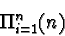

|
Imagine we have a collection of n distinct objects. There are n!
ways to order these objects; that is, we can form n! different
arrangements of these n objects. This is true because any such
arrangement will consist of n items, no matter which happens to be
first. To choose the first object in a particular arrangement we have
n options. However, to choose the second object after already
having placed the first, we are left with one less choice. The first
object is fixed at this point. Thus, we have (n-1) alternatives.
As we place more and more objects we have less and less choices of
objects to place. The summation below follows from this discussion:

This is the same as n!.
This section presents an algorithm for calculating all possible
permutations (that is, not just the number of permutations but the
actual permutated data) given the number of distinct data items to be
arranged.
|